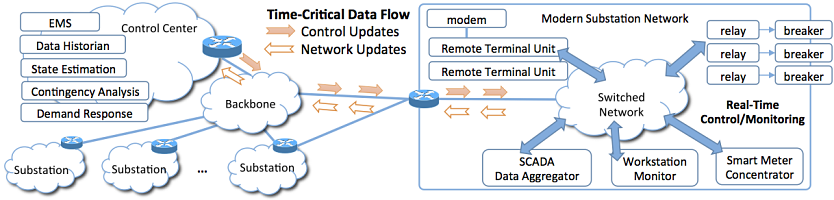
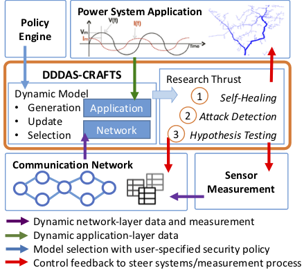

|
A DDDAS-based
Cyber-Resilient and
Attack-Secure Framework
for Trustworthy Industrial
Control Systems

Figure 1. An ICS Example in Smart Grid. The core components of DDDAS-CRAFTS include the novel underlying Software-Defined Networking (SDN)-based communication infrastructure and multiple DDDAS-based security modules to enable a secure and resilient power system. 
Figure 2. DDDAS-CRAFTS Frameworks. Sponsor |